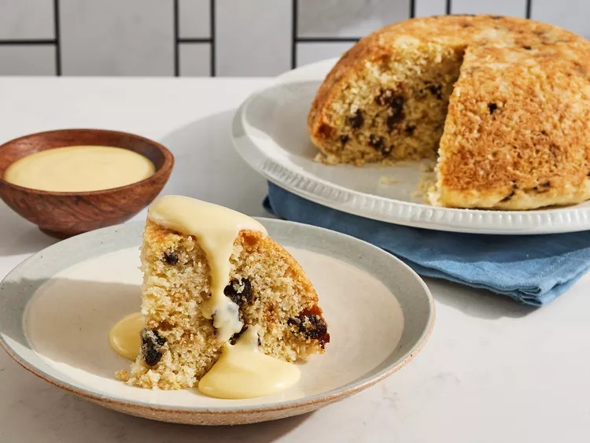
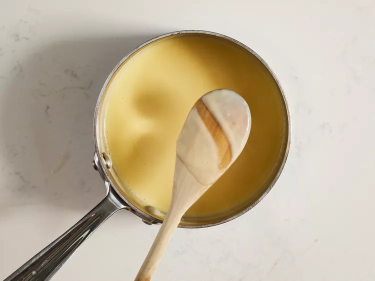
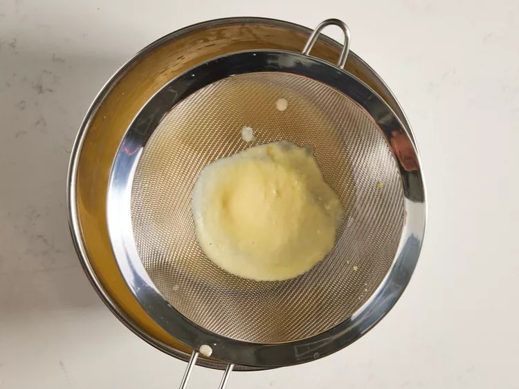
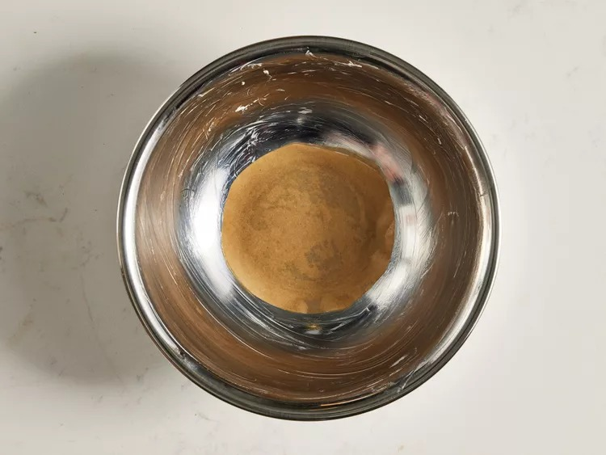
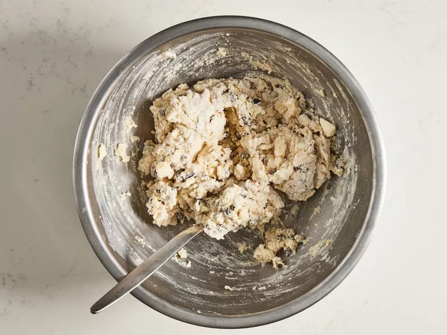
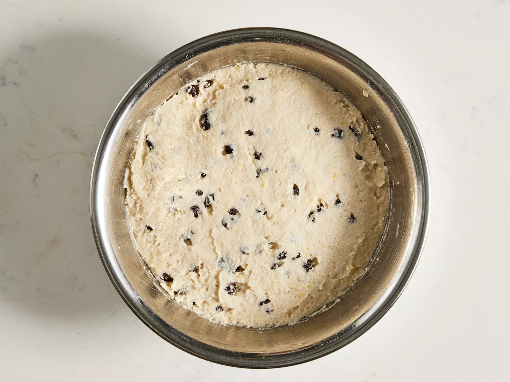
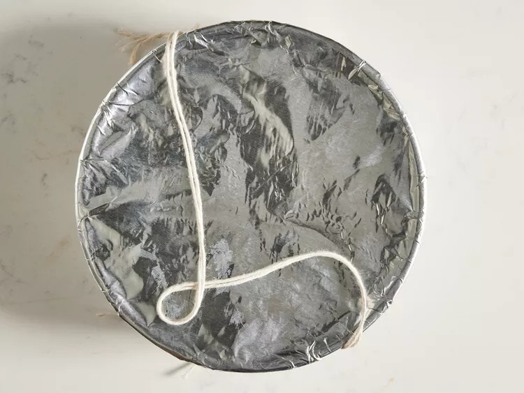

Home
Spotted Dick

Description
Spotted dick is a traditional British steamed pudding made with dried fruit and served with custard sauce, of course.
Ingredients
Custard Sauce
- 1/2 cup whole milk
- 1/2 heavy whipping cream
- 1/8 teaspoon kosher salt
- 1/4 cup granulated sugar
- 2 large egg yolks
- 1 teaspoon vanilla extract
Pudding
- 1 and 2/3 cups all-purpose flour
- 2 and 1/2 teaspoons baking powder
- 1/2 teaspoon kosher salt
- 1/3 cup granulated sugar
- 1/3 cup dried currants
- 1/3 cup raisins
- 1 teaspoon grated lemon zest
- 2/3 cup whole milk
- 1 teaspoon vanilla extract
Steps
- Heat milk, cream, and salt in a saucepan over medium-low heat, stirring often until steaming.
- Whisk together sugar and egg yolks in a bowl until well combined. Gradually pour half of warm milk mixture into egg yolk mixture, whisking constantly. Whisk egg yolk mixture back into milk mixture in saucepan. Cook egg yolk mixture over medium-low, whisking constantly, until mixture is just slightly thickened and coats the back of a spoon (see Cook's Note), 3 to 5 minutes.

- Remove from heat and whisk in vanilla extract. Strain egg yolk mixture through a fine mesh sieve into a bowl; let cool, uncovered, at room temperature for 30 minutes. Loosely cover and chill until completely cool, about 1 hour.

- While custard sauce cools, grease a 1.5-quart heat proof metal bowl with butter. Trace base of bowl on a sheet of parchment paper; cut out parchment round and use to line bottom of bowl.

- Whisk together flour, baking powder, and salt in a large bowl. Cut butter into flour mixture by hand or using a pastry blender until mixture resembles coarse breadcrumbs. Stir in sugar, currants, raisins, and lemon zest until well combined. Gradually stir in milk and vanilla just until combined. Batter will be very thick.

- Spoon batter into the prepared bowl, smoothing into an even layer. Loosely cover the bowl with a piece of buttered parchment paper.

- Tightly cover bowl with a double layer of aluminum foil. Wrap kitchen twine twice around top edge of bowl and tie tightly to secure aluminum foil; tie another piece of string onto twine on opposite sides of bowl to create a handle.

- Place an expandable metal steamer basket upside down in a large, deep pot to create a perforated platform. Fill pot with about 1 inch of water. Bring to a boil over medium-high, then reduce to a simmer over low. Place bowl in the pot. (Bottom of bowl should not touch water.) Cover and steam until pudding is set and a wooden pick inserted in center comes out clean, 1 hour and 30 minutes to 1 hour and 40 minutes. An instant-read thermometer inserted into the center register about 180 degrees F ( 82 degrees C). Adjust heat to maintain a simmer and add additional water as needed.

- Carefully remove bowl from pot using twine handle; remove and discard twine, aluminum foil and parchment paper. Let cool in bowl 10 minutes.
- Invert pudding onto a serving plate; remove bowl and discard parchment. Serve warm with chilled custard sauce.